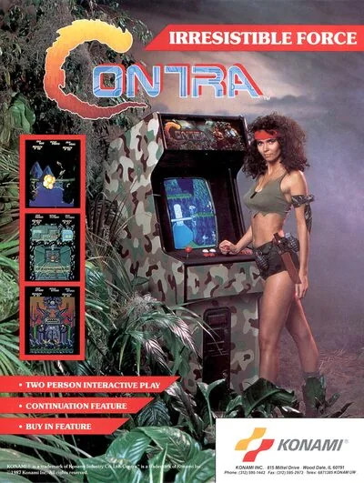

FBA (FinalBurn Alpha)
Contra
- Año: 1987
- Desarrollador: Konami
- Género: Plataformas / Disparos con desplazamiento
- Jugadores: 2 jugadores
- A dos: a la vez
Run and gun de Konami (en Europa, Gryzor): los comandos Bill Rizer y Lance Bean, uno o dos jugadores a la vez, se enfrentan a la organización Red Falcon y a un ser alienígena en las islas Galuga. Un solo impacto mata.
Controles
Dos botones.
| Panel | Juego |
|---|---|
 | Disparar |
 | Saltar |
  | Empezar |
 | Meter una moneda |
+  | Salir del juego |
El panel en FBA (FinalBurn Alpha)

🔎 Dudas para mirar jugando (1)
Datos de la guía que las fuentes no aclaran: si los compruebas en la bartop, apúntalo en las pruebas.
- ⚠️ Wikipedia dice que la recreativa tiene 7 fases; el longplay de «Vídeos» marca 8 y el jefe final (cuenta por separado tramos que Wikipedia agrupa).
Argumento
En 2631 cae un meteorito en el archipiélago de Galuga, cerca de Nueva Zelanda, con un ser alienígena dormido dentro. Dos años después, en 2633, la malvada organización Red Falcon ha montado una base en el archipiélago ficticio de Galuga, cerca de Nueva Zelanda, como parte de su plan para invadir la Tierra y acabar con la humanidad.
Dos comandos de la unidad Contra de los marines de la Tierra, Bill Rizer y Lance Bean, especialistas en guerrilla, van a la isla para destruir las fuerzas enemigas y descubrir qué ser alienígena las controla. (En Europa, la recreativa se llamó Gryzor.)
Fuentes
Jugabilidad
- Tipo de juego: run and gun frenético de Konami (1987), de plataformas. Uno o dos jugadores: Bill (rubio, camiseta blanca) y Lance (sin camiseta, pañuelo rojo).
- Vistas: lateral, pseudo-3D (avanzando hacia el fondo por los pasillos de las bases) y de pantalla fija.
- Arma básica: una ametralladora semiautomática con munición ilimitada. Se puede disparar en las 8 direcciones mientras se anda o se salta.
- Un solo impacto mata: cualquier enemigo, bala o peligro quita una vida al momento y el arma mejorada que llevaras, así que hay que coordinar bien los movimientos.
- Salto: en vez de saltar normal, el personaje da una voltereta. El joystick también apunta: en el aire se dispara en las 8 direcciones. Abajo: tumbarse para esquivar y disparar bajo. Salto agachado en una plataforma: bajar a la de abajo.
- Vidas: se pierde una al tocar enemigos o sus disparos, al no acabar una base a tiempo o al caer al vacío; al morir vuelves al arma básica. Solo se puede continuar 3 veces.
- Bases: en las fases de base hay un tiempo límite y hay que destruir un generador al final de cada pasillo.
Fuentes
Guía de niveles
Según ScreenScraper, son diez fases:
- Jungla (desplazamiento horizontal).
- Interior de la base 1 (laberinto en 3D: pasillos hacia el fondo, destruyendo sensores).
- Núcleo de la base 1 (3D, pantalla fija).
- Cascada (desplazamiento vertical, hacia arriba).
- Interior de la base 2 (laberinto en 3D).
- Núcleo de la base 2 (3D, pantalla fija).
- Campo nevado (horizontal).
- Zona de energía (horizontal).
- Hangar (horizontal).
- Guarida alienígena (horizontal), con el jefe final.
- ⚠️ Wikipedia dice que la recreativa tiene 7 fases; el longplay de «Vídeos» marca 8 y el jefe final (cuenta por separado tramos que Wikipedia agrupa).
- En las bases hay que destruir un sensor para entrar, abrirse paso por pasillos en 3D con tiempo límite y, en el núcleo, un ojo gigante que lanza bolas de fuego.
Objetos
| Objeto | Qué hace |
|---|---|
| Ametralladora | Dispara en ráfaga manteniendo el botón. |
| Láser | Rayo largo que atraviesa a muchos enemigos en fila. |
| F (bolas de fuego) | Disparo en espiral. |
| S (escopeta) | Cinco balas en abanico. |
| R | Disparo más rápido; sirve con la ametralladora y con las bolas de fuego. |
| B (barrera) | Invencible unos segundos. |
Las armas salen de los sensores, de las cápsulas voladoras y de los guardias rojos de las bases.
Fuentes
Trucos y secretos
Secretos
- Dos jugadores: el segundo puede entrar en cualquier momento; si uno se queda sin vidas, tiene que esperar a que el otro también las pierda para continuar juntos.
Fuentes
Longplay

Partida completa de la recreativa (14 min), de VICIOGAME Retro Games: 🎮 Contra (Arcade) Complete Gameplay.
Pulsa el minuto de un nivel para ver el vídeo desde ese punto.